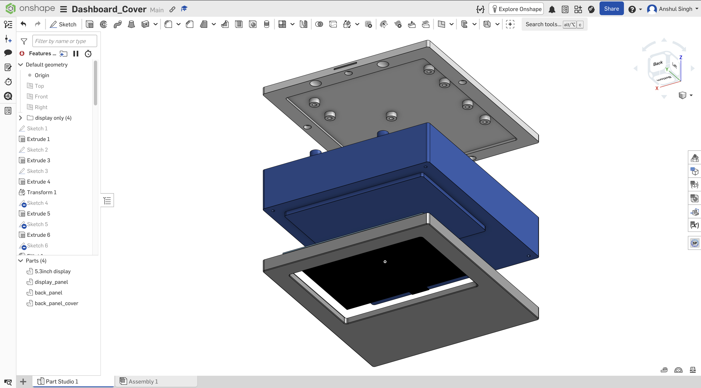
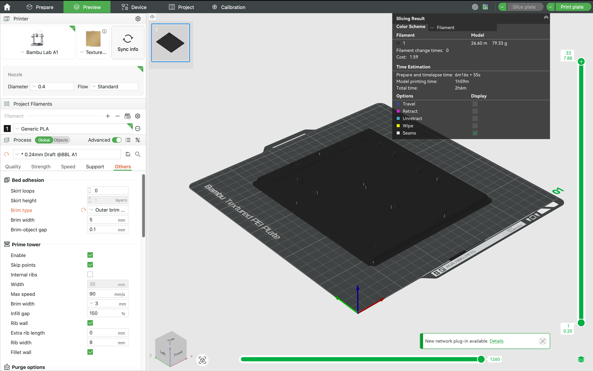
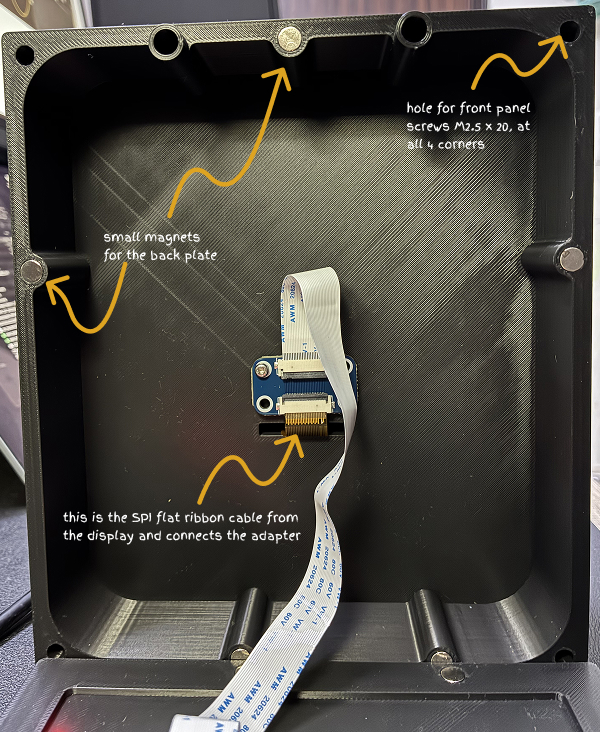
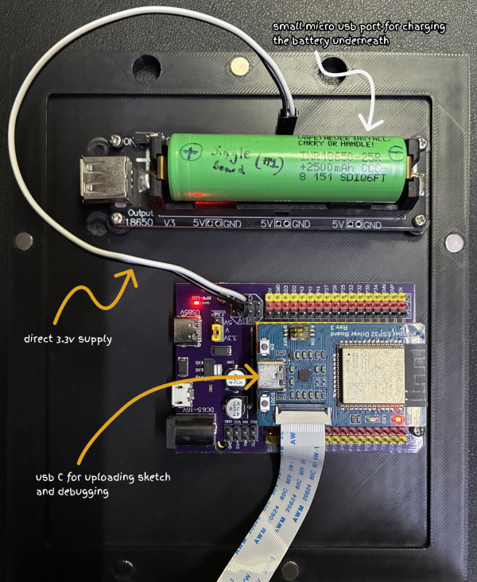
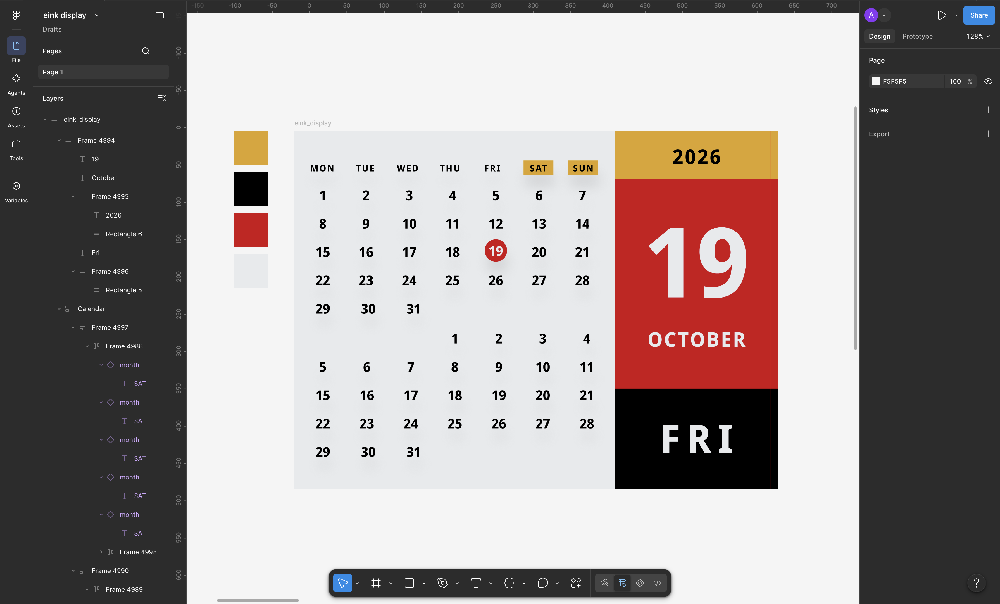
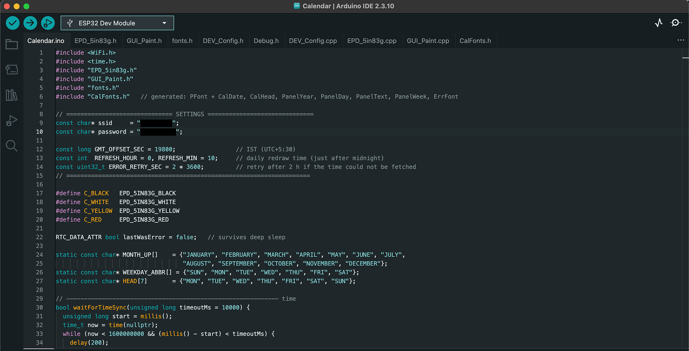

Single 18650 battery board (for charging and 3.3v DC supply to ESP32) View part
38-Pin ESP32 Expansion Board (for seating EPS32 board and have easy access to all pins for future prototyping) View part
Step 2 : Designing the enclosure
The enclosure was designed with 3 parts — the front panel, the main (back panel) and the back cover. Post designing I exported the 3 objects in .STL format for 3D printing.

Assembly of 3 components in the onshape (CAD). The black one is the 5.83" display, which I designed just for reference.
Drag the 3D model to rotate. Scroll to zoom in and out.
Display Panel
Back Panel
Back Panel Cover
Step 3 : 3D printing
For 3D printing, I used my Bambu Lab A1 with a matt black PLA filament. I modified (from the default settings) and added 5mm brim on the outer edges since few test prints had shrinkage on corners. (will add Timelapse video next time 😎)

Preview of 3D back cover on the Bambu Lab Slicer.
Step 4 : Assembly of components
This is the most exciting step and all past hard-work comes together.
Cleaned up 3D printed parts from the printer bed and deburred the edges.
Added brass inserts (M2.5x3x3) on the front panel and rear cover using soldering iron.
Added small magnets (x6) (6x3mm) to the rear back plate and the middle back panel(easy access to boards).
M2.5 screws to hold the front and middle panels, EPS32 board and power board.
Added 3.3V headers to the power board and connected the ESP board to power it directly.


Step 5 : UI Design
Designed a simple layout in Figma with 480 x 648px resolution frame and using a single monospace font - Noto Sans Mono Bold

Figma design for the Calendar UI.
Step 6 : Testing and Uploading the code
Once the hardware was set, I booted up the Arduino IDE and installed all the dependencies to connect to the ESP32 board using USB-C. Post demo code that was given with the board, I fired-up Claude Code and handed the UI design for it to plan ahead.
Only step before final sketch upload was to convert the font file (.ttf) into the C++ header library file(.h ) using the below python script.
make_calendar_fonts.py

Arduino IDE with final sketch "Calendar.ino" along with all the required files in same folder.
Once the font file was generated (CalFonts.h), compiled and uploaded the sketch to the ESP32 and flash - the e-Ink came to life. Voila !
Calendar.ino
Learnings:
As I was building this project, lot of thoughts and ideas crossed my mind on what would I will do next time if I had to build this again.
Some of the thoughts:
The front surface of the panel is textured due to the Textured PEI plate, I might prefer a smooth one to have a much better texture.
I did not optimize the parts for 3D printing, I could sense that and wasted lot of filament (on auto supports) and time while printing.
Tolerances (the panel is bit loose on the frame as I gave around 2mm clearance) are something I need to pay more attention to in future projects for a better fit.
The Frame is bit thick on the back due to both the battery and the esp32 board (with extension) taking a lot of height; a flat battery with thinner profile and a 90-degree pin headers for ESP32 might make the profile slim.
This e-Ink display does not support partial-refresh, which limits it ability to show high frequency updates like clock-time, temperature (from a sensor) that can be updated without a full refresh.
For brass heat inserts, I used a soldering iron with conical tip. Not ideal and sustainable approach. Also the inserts were for injection moulding not for 3d prints.
Using USB breakout boards that allow connecting the internals boards for debugging and charging battery. Also LED displays to show the status just near to the ports.
A push button to to erase/reset the eInk Display from the case itself
More experimentation on the UI - adding SVG icons, small images, fancy borders...